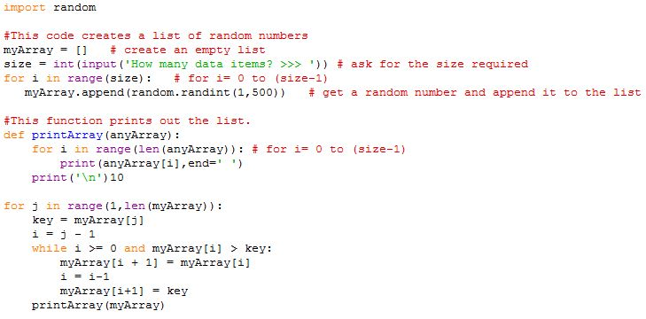

<div id="jsn-maincontent" class="span9 order1  row-fluid">
					<div id="jsn-maincontent_inner">
						<div id="jsn-centercol"><div id="jsn-centercol_inner">
									<div id="jsn-mainbody-content" class=" jsn-hasmainbody">
								<div id="jsn-mainbody-content-inner1"><div id="jsn-mainbody-content-inner2"><div id="jsn-mainbody-content-inner3"><div id="jsn-mainbody-content-inner4" class="row-fluid">
								
										
								
								<div id="jsn-mainbody-content-inner" class="span12 order1 ">
		
										<div id="jsn-mainbody">
										<div id="system-message-container">
	</div>

										<div class="item-page" itemscope itemtype="https://schema.org/Article">
	<meta itemprop="inLanguage" content="en-GB" >
	
		
						
		
	
	
		
								<div itemprop="articleBody">
		<p></p>
<h1 style="text-align: center;">Developing an understanding of our insertion sort program</h1>
<p>It can be quite difficult understanding what is happening in any program, but sorting algorithms can be especially difficult to understand. There are a few techniques we can use to help us. One thing we can usefully do is to print out the list after putting each element in its correct place.</p>
 
<p>We will modify the print statements so that it becomes a function. To use the function, all we have to do is say its name (printArray) and tell it what array to use (myArray). One thing to remember about functions - you should always write them before you use them! The code for the function must go above any code that calls them.</p>
<p><strong>Q1.</strong> Modify your previous program code to get this working.</p>
<p><span style="line-height: 1.5;">&nbsp;</span></p>
<p><strong>Q2.</strong> Try sorting 5 numbers, 10 numbers and 20 numbers a few times. See how each element gets put in the correct place.<strong><br>Q3.</strong>&nbsp;Find out using the Internet how to 'Comment out' this code so, rather than delete it, you just disable it for a while:</p>
<p style="margin-left: 30px;"><strong>import random</strong></p>
<p style="margin-left: 30px;"><strong>#This code creates a list of random numbers.</strong><br><strong>myArray = [] # create an empty list</strong><br><strong>size = int(input('How many data items? &gt;&gt;&gt; ')) # ask for the size required</strong><br><strong>for i in range(size): # for i= 0 to (size-1)</strong><br><strong>&nbsp; &nbsp; &nbsp;myArray.append(random.randint(1,500)) # get a random number and append it</strong></p>
<p><strong>Q4.</strong>&nbsp;After you have commented out the above code, create a list of animals like this at the top of your program:</p>
<p style="margin-left: 30px;"><strong>myArray=["adder", "zebra", "lion", "rat", "koala bear", "monkey", "shark", "ant"]</strong></p>
<p style="margin-bottom: 10px;">Run the program and check it works. Try and follow what happens to the list after each insertion by examining the printout of the list after each round.<br><strong>Q5.</strong>&nbsp;Create a new list of friends, football teams, countries or whatever you like and sort them.<br><strong>Q6.</strong> Look up the word '<strong>array</strong>'. What does it mean?&nbsp;</p>
<p></p>	</div>

	
							</div>

									</div>
				
							</div>
							
				        							
							
							</div></div></div></div></div>			
							
							
		        				</div></div> 
				</div></div>